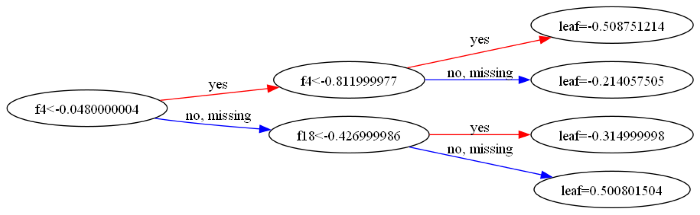

import orbital
import duckdb
import sqlglot
import skl2onnx
import pandas as pd
import numpy as np
import xgboost as xgb
import matplotlib.pyplot as plt
from xgboost import XGBClassifier
from sklearn.compose import ColumnTransformer
from sklearn.pipeline import Pipeline
from sklearn.preprocessing import StandardScaler
from sklearn.datasets import make_classification
from skl2onnx import update_registered_converter
from skl2onnx.common.shape_calculator import calculate_linear_classifier_output_shapes
from onnxmltools.convert.xgboost.operator_converters.XGBoost import convert_xgboostorbital for xgboost
Set Up
# make data dataset
X_train, y_train = make_classification(10000, random_state = 102)
X_train = X_train.round(3)
# get column names for use in pipeline
## onnxmltools forces these to be formatted as "f<number>"
n_cols = len(X_train[0])
nm_cols = [f"f{i}" for i in range(n_cols)]
feat_dict = {c:orbital.types.DoubleColumnType() for c in nm_cols}Convert an xgboost model to a SciKitLearn pipeline with XGBClassifier
# train with xgb learning api
## keeping parameters super simple so it trains fast and easy to compare
## important: this only works for now with base_score=0.5
## this is the default assumed by orbital's logic, and I haven't figured out how to convince it otherwise
dtrain = xgb.DMatrix(X_train, y_train, feature_names = nm_cols)
params = {'max_depth':2,
'objective':'binary:logistic',
'base_score':0.5,
'seed':504}
model = xgb.train(params, num_boost_round = 1, dtrain = dtrain)
preds_xgb = model.predict(xgb.DMatrix(X_train, feature_names = nm_cols))
# convert back to skl interface & rebuild needed metadata
clf = xgb.XGBClassifier()
clf._Booster = model
clf.n_classes_ = 2
clf.base_score = 0.5
preds_skl = clf.predict_proba(X_train)[:,-1]
# validate that the results are the same
print(f"xgb and skl match: {np.all(np.isclose(preds_xgb, preds_skl))}")
# add to skl pipeline
ppl = Pipeline([("gbm", clf)])
preds_ppl = ppl.predict_proba(X_train)[:,-1]
# validate that the results are the same
print(f"xgb and ppl match: {np.all(np.isclose(preds_xgb, preds_ppl))}")xgb and skl match: True
xgb and ppl match: True
xgb and skl match: True
xgb and ppl match: True# now we actually make a slightly more complicated pipeline
# orbital seems unhappy if there isn't at least one preprocessing step,
# so we make one that processes no variables and passes through the rest
pipeline = Pipeline(
[
("preprocess", ColumnTransformer([("scaler", StandardScaler(), [])], remainder="passthrough")),
]
)
pipeline.fit(X_train)
pipeline.steps.append(("gbm", clf))
preds_ppl2 = pipeline.predict_proba(X_train)[:,1]
print(f"xgb and ppl2 matches: {np.all(np.isclose(preds_xgb, preds_ppl2))}")xgb and ppl2 matches: True
xgb and ppl2 matches: TrueRegister translator for XGBClassifier
XGBClassifier is implemented in onnxmltools. This converter can then be registered to skl2onnx.
# `options` copied straight from `onnxmltools` docs
update_registered_converter(
XGBClassifier,
"XGBoostXGBClassifier",
calculate_linear_classifier_output_shapes,
convert_xgboost,
options={"nocl": [True, False],
"zipmap": [True, False, "columns"],
},
)Override parse_pipeline function from orbital
This solves a bit of a niche (?) problem. The ONNNX model spec is versioned, and using onnxmltools in the previous step seems to encourage a target_opset which is not comparible with something in either skl2onnx or orbital. The error message advised explicitly specifying the desired target_opset in skl2onnx.to_onnx(), but orbital doesn’t let us pass this into parse_pipeline().
So, we override parse_pipeline(). This is a top-level function and not a class method, so we don’t need to monkey patch; we can just steal the code directly and define our own function.
def parse_pipeline_local(
pipeline: Pipeline, features: orbital.types.FeaturesTypes
) -> orbital.ast.ParsedPipeline:
onnx_model = skl2onnx.to_onnx(
pipeline,
initial_types=[
(fname, ftype._to_onnxtype())
for fname, ftype in features.items()
if not ftype.is_passthrough
],
target_opset={"": 15,'ai.onnx.ml':3}
)
return orbital.ast.ParsedPipeline._from_onnx_model(onnx_model, features)Run orbital
Still with me? Now, we run orbital which is what we were trying to do all along.
# translate into an Orbital Pipeline
orbital_pipeline = parse_pipeline_local(pipeline, features=feat_dict)
sql_raw = orbital.export_sql("DATA_TABLE", orbital_pipeline, dialect="duckdb")c:\Users\emily\Desktop\website\post\orbital-xgb\.venv\Lib\site-packages\orbital\translation\steps\trees\classifier.py:135: FutureWarning: `case` is deprecated as of v10.0.0, removed in v11.0; use ibis.cases()
ibis.case().when(condition, t_val).else_(f_val).end()
c:\Users\emily\Desktop\website\post\orbital-xgb\.venv\Lib\site-packages\orbital\translation\steps\trees\classifier.py:157: FutureWarning: `case` is deprecated as of v10.0.0, removed in v11.0; use ibis.cases()
ibis.case()Clean up query (optional)
As we all know, ugly queries still run. But we can use sqlglot (used under the hood already anyway) to clean up the query.
# parse AST from SQL script
ast = sqlglot.parse_one(sql_raw)
# clean up SQL
## drop the class prediction and negative-event predictions
ast.expressions[0] = None
ast.expressions[1] = None
## add back a variable for reference (typically like an ID for joining to other tables)
ast = ast.select('f1')
## rename positive-event predictions for something simpler to interpret
sql_mod = ast.sql()
sql_mod = sql_mod.replace("output_probability.1", "pred")
## pretty print -- not important for usage; but we'll take a peak at the output at the end here
sql_fmt = sqlglot.transpile(sql_mod, write="duckdb", identify=True, pretty=True)[0]Validate Inputs
Another fun form of validation – we can visually inspect the beginning of our xgboost tree and compare it to the compile SQL!
fig, ax = plt.subplots(figsize=(30, 30))
xgb.plot_tree(model, tree_idx=0, rankdir='LR', ax=ax)
plt.show()
print(sql_fmt)SELECT
1 / (
EXP(
-CASE
WHEN "t0"."f4" < -0.04800000041723251
THEN CASE
WHEN "t0"."f4" < -0.8119999766349792
THEN -0.5087512135505676
ELSE -0.21405750513076782
END
ELSE CASE
WHEN "t0"."f18" < -0.4269999861717224
THEN -0.3149999976158142
ELSE 0.5008015036582947
END
END
) + 1
) AS "pred",
"f1"
FROM "DATA_TABLE" AS "t0"
SELECT
1 / (
EXP(
-CASE
WHEN "t0"."f4" < -0.04800000041723251
THEN CASE
WHEN "t0"."f4" < -0.8119999766349792
THEN -0.5087512135505676
ELSE -0.21405750513076782
END
ELSE CASE
WHEN "t0"."f18" < -0.4269999861717224
THEN -0.3149999976158142
ELSE 0.5008015036582947
END
END
) + 1
) AS "pred",
"f1"
FROM "DATA_TABLE" AS "t0"Validate Output
Although we can confirm visually this does what we want, we don’t get perfectly matching predictions for observations at the corner cases. Due to floating point math, it seems observations may sometimes end up on dirrect sides of the cutpoints.
DATA_TABLE = pd.DataFrame(X_train, columns = nm_cols)
db_preds = duckdb.sql(sql_mod).df()
preds_orb = db_preds['pred']
print(f"xgb and orb match: {np.all(np.isclose(preds_xgb, preds_orb))}")xgb and orb match: False
xgb and orb match: False# isolate and size misses
misses = np.where(~np.isclose(preds_xgb, preds_orb))
print(f'Different predictions (N): {len(misses[0])}')
print(f'Different predictions (P): {len(misses[0]) / len(X_train):.4f}')
# pull out f4 and f18; notice that all discrepancies lie exactly at the splitting points
X_train[misses][:,[4,18]]Different predictions (N): 5
Different predictions (P): 0.0005
Different predictions (N): 5
Different predictions (P): 0.0005array([[-0.812, -0.515],
[-0.812, -0.739],
[ 1.715, -0.427],
[ 0.025, -0.427],
[ 2.119, -0.427]])